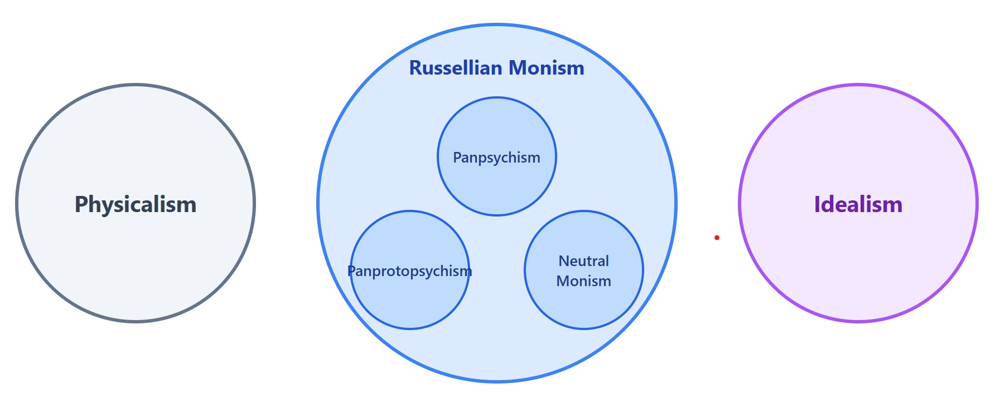

Michaela Chan (my wife) at the top of Winter Park mountain in Colorado
Posted on February 3, 2026
Consciousness is the first-person subjective experience—the "what it's like" to be you in each moment. If you're not already familiar with what I mean by consciousness, check out my post on defining consciousness.
The hard problem of consciousness, as articulated by philosopher David Chalmers, asks why there is subjective experience at all. Why isn't the brain just an information-processing machine operating "in the dark," without any accompanying inner experience? We can explain how the brain processes visual information, but that doesn't explain why seeing red feels like something. This explanatory gap between physical processes and subjective experience is the hard problem.
Physicalism is the dominant view in contemporary philosophy of mind: everything that exists is physical, and consciousness is no exception. Mental states just are brain states, and once we fully understand the brain, we'll understand consciousness.
The fundamental problem with physicalism is the hard problem above. We could, in principle, give a complete predictive physical description of what is and will happen in the world of physical objects—including human brains and the electrons and particles bouncing around in there that lead to decisions. And yet this description would not tell us why there is something it is like to have experience. Physics can predict behavior, but it doesn't explain the existence of first-person experience.
Panpsychism is a view I've been drawn towards as a solution to the hard problem of consciousness. My interpretation: physical matter has a fundamental property of consciousness, just like mass or charge.
The first and most pressing problem the panpsychist runs into is the combination problem. Sure, let's say everything—even fundamental particles—has consciousness to some extent. But how does all this mush of individually conscious particles give rise to the unified, clean first-person experience that we as humans have?
Russellian monism is probably the view I'm most closely aligned with these days. Bertrand Russell observed that physics tells us what matter does (its relational properties) but not what it is intrinsically. Physics predicts what our experience will be. But particles, electrons, quarks, and wave functions are not fundamentally what our experience is, nor what the fundamental fabric of reality is.
Maybe the intrinsic nature of matter is experiential or maybe it is something else entirely that is more fundamental than experience and the physical world. Physics remains true—it's just incomplete.

A taxonomy of views on consciousness
Panpsychism is a subset of Russellian monism. It says: yes, there is some intrinsic nature of reality that physics is not capturing, and that missing fundamental property is consciousness itself.
But not all Russellian monists think consciousness is fundamental. Two other views posit something even more basic:
Honestly, I have no idea how we would ever determine which of these is correct. We only have access to our first-person experience, so positing something even more fundamental—whether proto-experiential or neutral—makes verification nearly impossible. But the core intuition appeals to me: that there is some intrinsic nature of reality prior to both the physical world as physics describes it and consciousness as we experience it. Physics describes the relational structure; something else gives us the substance.
One more interesting theory of conscioussness that solves the hard problem is Idealism, which takes the opposite approach from physicalism: rather than consciousness arising from matter, matter arises from (or is constituted by) consciousness. The physical world is, in some sense, mental. George Berkeley famously argued that to exist is to be perceived—physical objects are just bundles of sensory experiences.
The immediate problem with idealism is: whose mind? If physical reality depends on being perceived, what happens when no one is looking?
Modern versions of idealism, sometimes called "cosmopsychism" or "objective idealism," attempt to solve this by positing that reality is fundamentally one universal consciousness, and individual minds are fragments or aspects of this cosmic mind. This inverts the combination problem: instead of asking how micro-experiences combine into macro-consciousness, the idealist asks how one unified consciousness differentiates into many individual perspectives. This sounds pretty sketchy to me.
Where does this leave me? I find myself in the Russellian monist bucket of ideas. I'm attracted to the notion that there is some fundamental nature of reality we don't fully understand—and may not even have access to.
One thing that is clear to me: physics describes our world and makes increasingly accurate predictions. But it does not seem to me to be capturing all of fundamental reality. What's missing might be just consciousness itself, or it might be something even more basic. I don't know. But I suspect the answer lies somewhere in this direction.